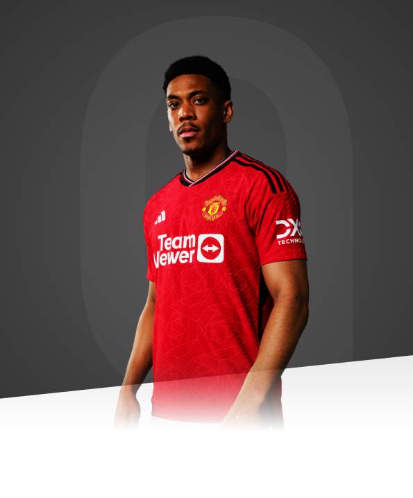

I love Manchester United, I love the fans, they give me a lot of joy.

AGE
27
APPEARANCES
307
CLEAN SHEETS
89
BIOGRAPHY
A forward who is often compared to Premier League legend Thierry Henry, another former Monaco man, Anthony Martial has all of the tools needed to shine at Manchester United.
Martial began his career in the junior ranks of CO Les Ulis, where Henry and ex-Red Patrice Evra both started their illustrious careers. At the age of 14, he joined Lyon and became a regular for the France youth sides, earning a reputation as one of Europe's hottest prospects. His excellent potential was so obvious that Monaco paid €5million for his signature in a transfer that rocked French football.
Anthony then joined the Reds on transfer deadline day during the summer of 2015 and made his mark by scoring an excellent debut goal as a substitute against Liverpool, which immediately won the love and respect of the fans. That famous strike later won the club's Goal of the Season award during the annual prize-giving night at Old Trafford, beating off competition from Marcus Rashford.
Martial finished the 2015/16 season as United's top scorer with 17 goals from 49 appearances and that included a dramatic added-time winner during the FA Cup semi-final victory over Everton, which led to earning a winners' medal following the 2-1 extra-time win over Crystal Palace in the final. That wrapped up a superb maiden season in which the Reds forward emphasised his massive potential.
The 2016/17 campaign, his first under the management of Jose Mourinho, yielded eight goals and 42 appearances, plus three trophies in the FA Community Shield, EFL Cup and UEFA Europa League.
2017/18 saw the no.11 shift up a gear once more, his explosive pace and instinctive eye for goal making him a key part of United's attacking armoury. Either sharing attacking duties with Rashford or being unleashed as a front three with Marcus and Lukaku, Martial surpassed his goals total from the previous season. Five goals in United's opening eight games, plus a run of form in January meant that the Frenchman ended the season with 11 goals in all competitions.
Anthony enjoyed a good first half of the 2018/19 season and was voted our Player of the Month for October by fans after a series of impressive performances. On 31 January 2019, Martial signed a new contract, keeping him at the club until June 2024, with the option to extend for a further year.
Following Romelu Lukaku's move to Inter Milan, he switched back to United's no.9 jersey and quickly got off the mark for 2019/20 with the second goal in the 4-0 rout of Chelsea at Old Trafford, giving an early indication that he will thrive on the responsibility of playing down the middle and compensating for the lack of the Belgian's goals.
The Frenchman ended the 2019/20 season as United's top goalscorer with 23 goals, with 17 coming in the Premier League, his highest ever tally. As well, he set up 12 goals for his team-mates, resulting in 35 goal involvements in 48 appearances. Following his impressive season and attacking output, our no. 9 was voted as the Player's Player of the Year. That made Martial the first striker to receive the award since Wayne Rooney in the 2009/10 season.
Martial's involvement was reduced during the 2020/21 campaign as he faced fresh competition from new signing Edinson Cavani, who was Paris Saint-Germain's record goalscorer when he left the French club. Anthony made 36 appearances but scored only seven goals - two of which came as a sub in the Premier League record-equalling 9-0 win over Southampton.
Injury problems caused the no.9's outings to dwindle further in the first half of 2021/22 and his only goal came in a 1-1 draw with Everton at Old Trafford. After regaining fitness under interim manager Ralf Rangnick, he expressed a desire to play more regular first-team football.
After moving on loan to Spanish club Sevilla in January 2022, Anthony made made 12 appearances across La Liga and the Europa League. Injuries hampered the Frenchman's time in Spain, and he recorded one goal and one assist before returning to Manchester at the end of the season.
Martial impressed on Erik ten Hag's inaugural pre-season tour, but he suffered an injury at the beginning of the campaign. The Frenchman experienced a stop-start season due to further injuries, but managed to contribute nine goals across 29 games in all competitions, playing in all of United's final 12 Premier League fixtures.